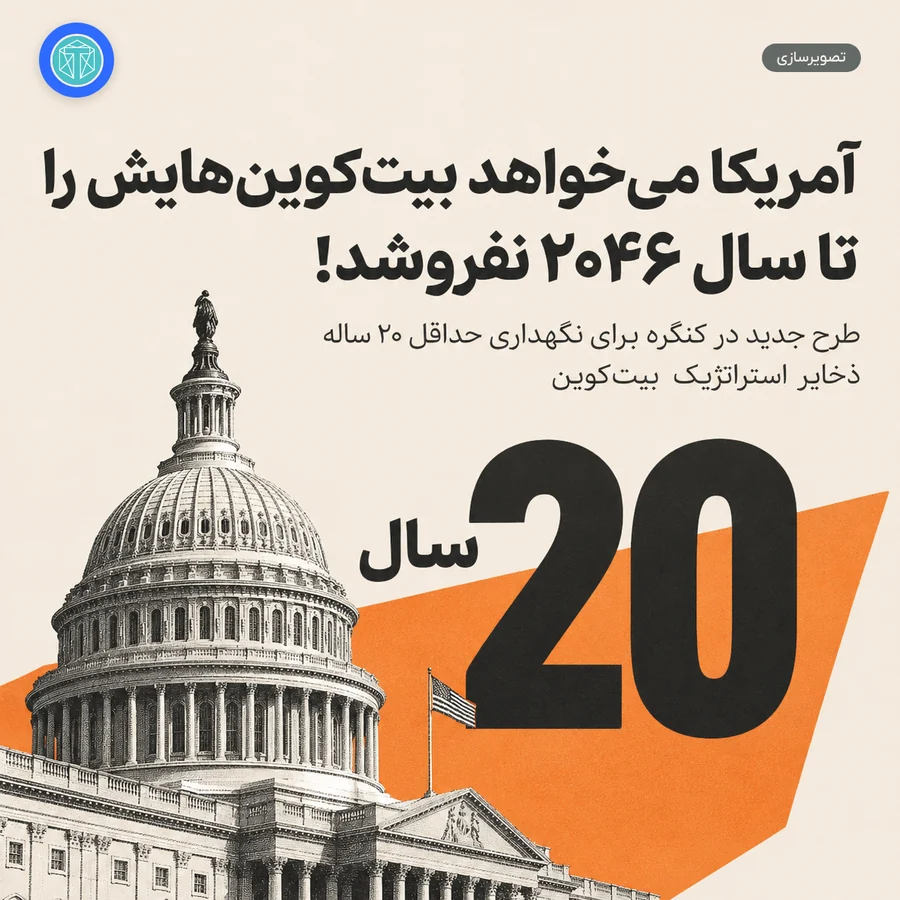

آمریکا میخواهد بیتکوینهایش را تا ۲۰۴۶ نفروشد
The US wants to hold its bitcoin until 2046
طرح ذخیرهی استراتژیک بیتکوین به صحن مجلس رسید؛ ولی هنوز قانون نیست و خریدی هم در آن نیست
The Strategic Bitcoin Reserve bill reaches the House floor, but it is not law yet and buys nothing
در شرایطی که بازار رمزارزها زیر فشار فروش است، طرحی در کنگرهی آمریکا یک قدم جلو رفته که میتواند جایگاه بیتکوین را در نظام مالی تغییر دهد: بیتکوینهای دولت آمریکا دستکم ۲۰ سال، یعنی تا حدود ۲۰۴۶، فروخته نشوند. اصل خبر درست است، ولی طرح هنوز قانون نشده و مهمتر از آن، دولت را به خرید بیتکوین جدید ملزم نمیکند.
در یک نگاه
- چه شد: طرح H.R.8957 با نام «قانون نوسازی ذخایر آمریکا ۲۰۲۶» در ۲۴ نوامبر رسماً برای رأیگیری به صحن مجلس نمایندگان فرستاده شد
- چه میگوید: ذخیرهی بیتکوین دستکم ۲۰ سال نه فروخته، نه مبادله، نه حراج و نه وثیقه میشود
- چه نمیگوید: هیچ خریدی را مجاز نمیکند؛ فقط بررسی میکند که آیا خرید بیشتر بدون هزینه برای مالیاتدهندگان ممکن است
- چقدر بیتکوین: طبق دادههای Arkham، حدود ۳۰۶٬۸۰۰ بیتکوین به ارزش بیش از ۱۸٫۷ میلیارد دلار؛ حدود ۱٫۴۶٪ سقف ۲۱ میلیونی
- شانس تصویب: کم. کنگرهی فعلی ۳ ژانویه تمام میشود و طرح هنوز باید از مجلس نمایندگان، سنا و امضای رئیسجمهور بگذرد
1. سه اتفاق متفاوت که نباید قاطی شوند
| اتفاق | وضعیت | اثر اقتصادی |
|---|---|---|
| تشکیل ذخیره با فرمان اجرایی | انجام شده (۶ مارس ۲۰۲۵) | دولت بیتکوینهای مصادرهای را نگه میدارد، ولی رئیسجمهور بعدی میتواند تغییرش دهد |
| تبدیل ذخیره به قانون (همین طرح) | در انتظار رأی مجلس نمایندگان | نگهداشتن ۲۰ ساله الزامی و پایدارتر میشود |
| خرید بیتکوین جدید توسط دولت | الزامی وجود ندارد | فقط این اتفاق تقاضای تازه در بازار میسازد |
جلوگیری از فروش با ایجاد تقاضای جدید یکی نیست. این طرح عرضهی احتمالی دولت را از بازار بیرون میبرد، ولی خریدار تازهای به بازار اضافه نمیکند.
2. این طرح دقیقاً چه میگوید؟
نسخهای که از کمیته گذشت (با جایگزین پیشنهادی برایان استیل، نمایندهی جمهوریخواه ویسکانسین):
- وزارت خزانهداری ظرف ۱۸۰ روز پس از تصویب، «ذخیرهی استراتژیک بیتکوین» و یک «انبار دارایی دیجیتال» جداگانه برای رمزارزهای دیگر را راه میاندازد
- نهادهای فدرال ظرف ۶۰ روز باید داراییهای دیجیتال خود را گزارش کنند
- بیتکوین واردشده به ذخیره دستکم ۲۰ سال نمیتواند «فروخته، مبادله، حراج، وثیقه یا به هر شکل دیگری واگذار» شود
- همهی بیتکوینهایی که دولت فدرال مالک است، نه فقط بیتکوینهای مصادرهای، واجد شرایط ورود به ذخیرهاند
- گزارش اثبات ذخایر سالانه میشود (در متن اولیه فصلی بود)
- تأمین ذخیره فقط از راه مبادلهی دارایی، مصادره و برنامههای همکاری با ایالتها است
- هیچ خریدی مجاز نیست. وزارت خزانهداری و وزارت بازرگانی ظرف ۱۸۰ روز بررسی میکنند که آیا خرید بیشتر بدون هزینه برای مالیاتدهندگان ممکن است؛ استقراض یا وثیقه گذاشتن ممنوع است
آنچه از متن اولیه حذف شد: استفاده از منابع فدرال رزرو، ارزشگذاری دوبارهی گواهیهای طلا، درآمد تعرفهها و هدیه (Decrypt). یعنی نسخهی فعلی از نسخهی اولیه محتاطتر است.
3. آمریکا چقدر بیتکوین دارد؟
طبق دادههای Arkham که CoinDesk گزارش کرده، نشانیهای منتسب به دولت آمریکا حدود ۳۰۶٬۷۹۵ بیتکوین دارند که بیش از ۱۸٫۷ میلیارد دلار ارزش دارد. این حدود ۱٫۴۶٪ سقف ۲۱ میلیونی بیتکوین است.
این رقم برآورد یک شرکت داده از روی نشانیهای منتسب است، نه آمار رسمی. حساب رسمی را خود طرح بعد از تصویب از نهادهای فدرال میخواهد.
ارزش فرضی همین تعداد بیتکوین در قیمتهای مختلف:
| قیمت هر بیتکوین | ارزش کل ذخیره |
|---|---|
| حدود ۶۱ هزار دلار (زمان گزارش) | ۱۸٫۷ میلیارد دلار |
| ۱۰۰ هزار دلار | ۳۰٫۷ میلیارد دلار |
| ۲۵۰ هزار دلار | ۷۶٫۷ میلیارد دلار |
| ۵۰۰ هزار دلار | ۱۵۳٫۴ میلیارد دلار |
| ۱ میلیون دلار | ۳۰۶٫۸ میلیارد دلار |
اینها سناریوی محاسباتیاند، نه پیشبینی قیمت.
4. چرا ۲۰ سال؟
فلسفهی طرح این است که بیتکوین از چرخهی تصمیمهای کوتاهمدت سیاسی و بودجهای بیرون بیاید و به یک دارایی بلندمدت ملی تبدیل شود. آمریکا دهههاست طلا را بخشی از ذخایر خود نگه میدارد؛ گروهی از قانونگذاران معتقدند بیتکوین میتواند در اقتصاد دیجیتال نقشی مکمل داشته باشد.
قفل ۲۰ ساله دو پیام دارد: برای بازار، یعنی دولت آمریکا فروشندهی بالقوهی بزرگی نیست؛ برای سیاستگذاران، یعنی هیچ دولتی نمیتواند در یک بحران بودجهای سراغ فروش آن برود.
5. مسیر تصویب: کجاییم؟
| تاریخ | مرحله | وضعیت |
|---|---|---|
| ۶ مارس ۲۰۲۵ | فرمان اجرایی ترامپ برای تشکیل ذخیره | انجام شده |
| ۲۱ مه ۲۰۲۶ | ارائهی طرح به کنگره (نیک بگیچ، جمهوریخواه آلاسکا، و جرد گلدن، دموکرات) | انجام شده |
| ۱۶ سپتامبر ۲۰۲۶ | تصویب در کمیتهی خدمات مالی با ۲۸ رأی موافق و ۲۱ مخالف | انجام شده |
| ۲۴ نوامبر ۲۰۲۶ | ارسال رسمی به صحن مجلس نمایندگان | انجام شده |
| هنوز تعیین نشده | رأیگیری مجلس نمایندگان | در انتظار |
| هنوز تعیین نشده | تصویب سنا و امضای رئیسجمهور | انجام نشده |
- رأی کمیته کاملاً حزبی بود: همهی ۲۸ موافق جمهوریخواه و همهی ۲۱ مخالف دموکرات. اصلاحیهی ماکسین واترز (دموکرات) که داشتن سهم کنترلی در دارایی دیجیتال را برای رئیسجمهور، معاون او، نمایندگان کنگره و خانوادهشان ممنوع میکرد، با همان نسبت ۲۱ به ۲۸ رد شد.
- کنگرهی فعلی ۳ ژانویهی ۲۰۲۷ تمام میشود؛ یعنی کمی بیش از پنج هفته، که بخش زیادیاش تعطیلات است.
- در بازار پیشبینی Polymarket، احتمال تشکیل ذخیرهی ملی بیتکوین تا پایان سال حدود ۴٪ است؛ این رقم یک سال پیش ۶۰٪ و در ماه مه ۳۴٪ بود (The Block). این قیمت بازار است، نه احتمال رسمی.
- اگر طرح در این دوره تصویب نشود، باید در کنگرهی بعدی دوباره ارائه شود. به نوشتهی CoinDesk و The Block، ترکیب کنگرهی بعدی پس از انتخابات نوامبر میتواند این کار را سختتر کند. فرمان اجرایی ۲۰۲۵ سر جایش میماند، ولی رئیسجمهور بعدی میتواند بدون کنگره آن را تغییر دهد.
6. برای بازار بیتکوین چه معنایی دارد؟
- کوتاهمدت: اثر مستقیم کم است. طرح خرید جدید ندارد و شانس تصویبش در این دوره پایین است.
- عرضه: اگر تصویب شود، حدود ۱٫۴۶٪ سقف بیتکوین برای ۲۰ سال از فهرست «فروشندههای احتمالی» بیرون میرود.
- پیام: داراییای که سالها بیرون از نظام مالی سنتی دیده میشد، حالا موضوع قانونگذاری برای نگهداری بلندمدت توسط بزرگترین اقتصاد جهان است.
- موانع: نوسان شدید قیمت، امنیت نگهداری، هزینهی فرصت سرمایه و اختلاف سیاسی همچنان جدیاند.
تحلیل دیتومان
اهمیت این خبر لزوماً در قیمت فردای بیتکوین نیست؛ در تغییر نگاه سیاستگذاران به ماهیت آن است. اگر کشورهای دیگر هم چنین سیاستی بگیرند، شاید روزی شاهد رقابت دولتها بر سر مالکیت داراییهای دیجیتال کمیاب باشیم.
ولی واقعبین باشیم: طرح هنوز قانون نیست، شانس تصویبش در این دوره کم است و حتی اگر تصویب شود، خریدی در کار نیست. شاید سؤال مهم آینده این نباشد که هر بیتکوین چقدر قیمت دارد؛ بلکه این باشد که کدام کشورها مالک چه مقدار از آن هستند.
این گزارش آموزشی است و توصیهی خرید یا فروش نیست.
بیشتر بخوانید
منابع
- CoinDesk: Bill to lock up U.S. government bitcoin for 20 years advances to full House (26 Nov 2026)
- The Block: House committee advances Strategic Bitcoin Reserve bill with narrow path to passage (25 Nov 2026)
- Decrypt: House committee advances US bitcoin reserve bill on party-line split (17 Sep 2026)
آخرین بازبینی: ۵ آذر ۱۴۰۵. مفاد طرح، رأی کمیته و جدول زمانی از CoinDesk، The Block و Decrypt بررسی شد؛ متن طرح در congress.gov از اینجا باز نشد. رقم داراییهای دولت برآورد Arkham است، نه آمار رسمی. سناریوهای قیمت محاسبهاند، نه پیشبینی. این گزارش توصیهی خرید یا فروش نیست.